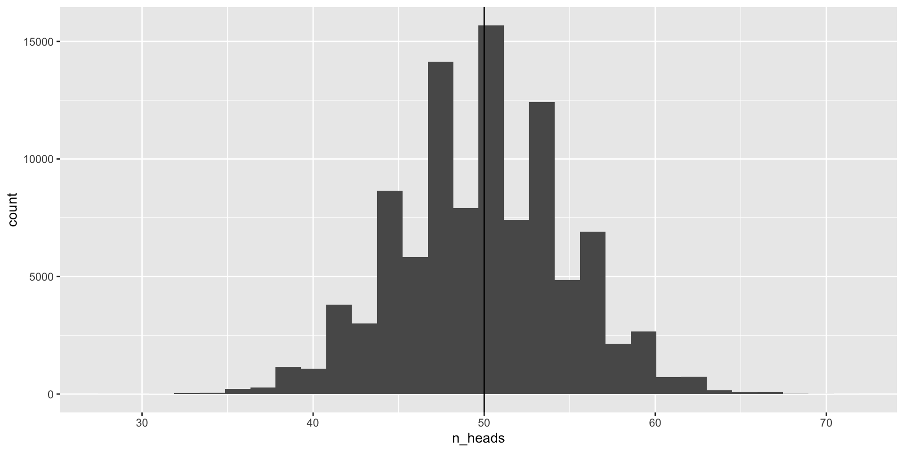
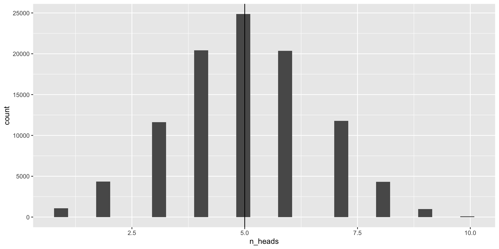
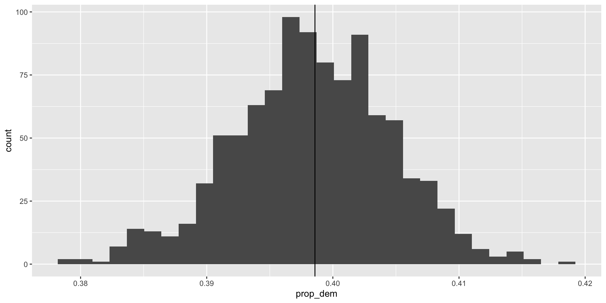
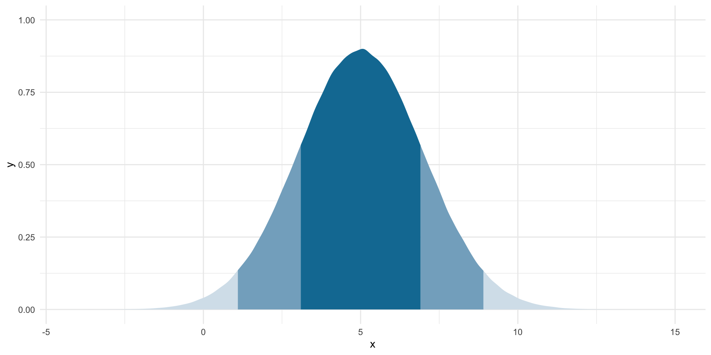

library(tidyverse)
library(janitor)
library(poliscidata)
library(ggdist)
library(MetBrewer)
library(DescTools)
set.seed(1234)Hypothesis Testing I
Readings
Class
Pollock & Edwards, Chapter 6
Lab
Pollock & Edwards R Companion, Chapter 6
Class slides
Section
Prerequisites
How will what you learn this week help your research?
Population and sample
Say we are interested in the proportion of US voters who will vote for Joe Biden in the 2024 general election. We cannot ask all US voters of their intentions. Instead, we ask a sample of the US voting population and infer from that sample the population’s intentions.
The data point of interest among the population is referred to as the parameter. Here, it is the proportion of US voters who intend to vote for Joe Biden in the 2024 general election.
The data point of interest among the sample is referred to as the statistic. Here, it is the proportion of survey respondents who intend to vote for Joe Biden in the 2024 general election.
We aim to have a statistic that accurately represents the parameter.
When we generalize from the sample statistic to the parameter we are engaging in statistical inference.
How can we be confident that our statistic represents the parameter? Generally speaking, the more our sample “looks like” our population, the more confident we can be that we have a good statistic. Drawing on probability theory, our sample is increasingly likely to resemble our population with its randomness and size.
You should strive for a pure random sample. This means that every individual within your population is equally likely to be drawn. This is really hard to achieve! Think about normal election surveys. Many are conducted over the phone. There are plenty of people who do not have a landline phone, or do not pick up calls from unknown numbers, or who keep their phones on do not disturb during the day. These people will be harder to contact than those who are sitting by the phone waiting eagerly for a call. Even if you have access to all US voters’ phone numbers (never mind that some voters do not have phone numbers) and you take a random sample of those phone numbers and start calling, you still will not get a hold of them all with equal probability.
You should also strive for as large a sample as you can possibly get. More is always better in terms of statistical inference (if not your research budget or time). Remember back to our coin flips last week. The more coin flips we did, the closer we got to the true probability distribution between heads and tails. This principle also holds here.
Sampling error
Imagine you have a large and representative sample. You are still going to have some error. This is because your sample varies in all the normal ways events with uncertainty vary. To illustrate, let’s return to our coin flips.
We state our possible outcomes:
possible_outcomes <- c("HEADS", "TAILS")
possible_outcomes[1] "HEADS" "TAILS"We flip our coin 100 times:
sample(possible_outcomes, 100, replace = T, prob = c(0.5, 0.5)) [1] "TAILS" "HEADS" "HEADS" "HEADS" "HEADS" "HEADS" "TAILS" "TAILS" "HEADS"
[10] "HEADS" "HEADS" "HEADS" "TAILS" "HEADS" "TAILS" "HEADS" "TAILS" "TAILS"
[19] "TAILS" "TAILS" "TAILS" "TAILS" "TAILS" "TAILS" "TAILS" "HEADS" "HEADS"
[28] "HEADS" "HEADS" "TAILS" "TAILS" "TAILS" "TAILS" "HEADS" "TAILS" "HEADS"
[37] "TAILS" "TAILS" "HEADS" "HEADS" "HEADS" "HEADS" "TAILS" "HEADS" "TAILS"
[46] "HEADS" "HEADS" "TAILS" "TAILS" "HEADS" "TAILS" "TAILS" "HEADS" "HEADS"
[55] "TAILS" "HEADS" "TAILS" "HEADS" "TAILS" "HEADS" "HEADS" "TAILS" "TAILS"
[64] "TAILS" "TAILS" "HEADS" "TAILS" "HEADS" "TAILS" "HEADS" "TAILS" "HEADS"
[73] "TAILS" "HEADS" "TAILS" "HEADS" "TAILS" "TAILS" "TAILS" "HEADS" "HEADS"
[82] "TAILS" "TAILS" "HEADS" "TAILS" "HEADS" "TAILS" "TAILS" "TAILS" "HEADS"
[91] "TAILS" "HEADS" "TAILS" "TAILS" "TAILS" "HEADS" "TAILS" "TAILS" "TAILS"
[100] "HEADS"We know that the true probability of the coin landing on heads is 0.5. If we flip a fair coin 100 times, we should get 50 heads. We also know that these random draws are a bit noisy: we can get proportions that do not reflect the underlying probability of 0.5. However, the more flips we do, the closer we will get to that true probability distribution.
Let’s do 100,000 100-coin flip trials and record the number of heads we get each time:
coin_flip <- function(possible_outcomes, n) {
outcomes <- sample(possible_outcomes, size = n, replace = T, prob = c(0.5, 0.5))
return(table(outcomes)["HEADS"])
}
results <- tibble(trial = 1:100000) |>
rowwise() |>
mutate(n_heads = coin_flip(possible_outcomes, 100))
results# A tibble: 100,000 × 2
# Rowwise:
trial n_heads
<int> <int>
1 1 52
2 2 52
3 3 48
4 4 60
5 5 61
6 6 49
7 7 52
8 8 50
9 9 49
10 10 45
# ℹ 99,990 more rowsWhat are the results of these repeated trials?
ggplot(results, aes(x = n_heads)) +
geom_histogram() +
geom_vline(xintercept = 50)
So we know that each time we flip that coin, there is a 50% chance that it will land on heads. We know this because we programmed it in to our sample (sample(c("HEADS", "TAILS"), prob = c(0.5, 0.5))). We don’t usually have this luxury of knowing the parameter, so let’s take advantage of this to build up our confidence around good samples and their relationship to the population.
Even though every time we flip the coin there is a 50% chance it lands on heads, we still get some trials in which we draw many more or far fewer than our expected 50 heads. We have some as low as 28 and some as large as 71. But notice how the number of heads recorded in most of our trials are clustered around our expected 50. The mean of our results is 49.9987 which is really, really close to our known parameter of 0.5 or 50%. Yay!
So, even with representative and large samples you will get some error. That’s okay. We can still use that sample to confidently infer what the parameter looks like.
Let’s extend this a little further. What happens if we conduct less trials? Let’s try with only 100 trials.
results_100 <- tibble(trial = 1:100) |>
rowwise() |>
mutate(n_heads = coin_flip(possible_outcomes, 100))
ggplot(results_100, aes(x = n_heads)) +
geom_histogram() +
geom_vline(xintercept = 50)
Not as clean as we would like. The average number of heads drawn in each of these 100 trials is 50.31, which is 0.31 points away from the parameter (compared to -0.0013 for our 100,000 trials).
What about if we decrease the number of draws we make in each trial? Let’s only take 10 draws in our original 100,000 trials.
results_10 <- tibble(trial = 1:100000) |>
rowwise() |>
mutate(n_heads = coin_flip(possible_outcomes, 10))
ggplot(results_10, aes(x = n_heads)) +
geom_histogram() +
geom_vline(xintercept = 5)
The average number of heads drawn in each of these 100,000 trials is 5.0028231, which is 0.0028231 points away from the parameter (compared to -0.0013 for our 100,000 trials).
The lessons we can take from this is that more is better. The more times you flip that coin, the closer you will get to the true underlying probability of a fair coin landing on heads.
You will need to make important decisions in your own research regarding the number of samples with which you are comfortable. This will be constrained by your budget, time, and population. You will get a more accurate picture of the parameter with more data points. However, adding another 1,000,000 responses to your survey may result in a change so small it has no material impact what you infer from your analysis. If this is the case and you have a representative sample, you are well justified in not running yourself dry trying to get those extra observations.
For more information on working out the smallest acceptable sample size for an experiment, look up power analysis.
Sampling distributions
Let’s move on from coin flips. Suppose that we want to know how many Americans identify as Democrats. We will return to the American National Election Survey to answer this question.
This survey asks respondents whether they identify as a Democrat (this binary variable takes on 0 if not and 1 if they do).
nes |>
select(caseid, dem) |>
head() caseid dem
1 408 0
2 3282 1
3 1942 0
4 118 1
5 5533 0
6 5880 0Let’s very cheekily pretend that this is a complete survey of the entire voting population of America. That way, we can pretend that we know the proportion of US voters who identify as Democrats (our parameter).
tabyl(nes, dem) dem n percent valid_percent
0 3534 0.597363083 0.5997963
1 2358 0.398580122 0.4002037
NA 24 0.004056795 NAOkay, so let’s pretend that 40% of all US voters identify as Democrats.
We can’t survey all voters, so instead we take a representative and large sample from this population:
nes_sample <- nes |>
select(caseid, dem) |>
slice_sample(n = 3000)We have taken a pure random sample of 3,000 (or 51% of our population of 5,916 voters). Each of those voters had an equal probability of being picked for this sample.
What proportion of this sample identify as Democrats?
tabyl(nes_sample, dem) dem n percent valid_percent
0 1795 0.598333333 0.6011386
1 1191 0.397000000 0.3988614
NA 14 0.004666667 NA39.70%. Nice! But what if we took a different sample of 3,000?
nes_sample_2 <- nes |>
select(caseid, dem) |>
slice_sample(n = 3000)tabyl(nes_sample_2, dem) dem n percent valid_percent
0 1779 0.593 0.5947844
1 1212 0.404 0.4052156
NA 9 0.003 NAWe get a different answer: 40.40%. Of course! This is just like our different coin flip trials from last week. Each resulted in a different number of heads. The more flips we did, the closer we got to the true underlying probability distribution.
Let’s take 1,000 different samples of 3,000 US voters and see what we get:
dem_survey <- function(df, n) {
slice_sample(df, n = n) |>
tabyl(dem) |>
filter(dem == 1) |>
pull(percent)
}
nes_samples_1000 <- tibble(survey = 1:1000) |>
rowwise() |>
mutate(prop_dem = dem_survey(select(nes, caseid, dem), 3000)) |>
ungroup()
nes_samples_1000# A tibble: 1,000 × 2
survey prop_dem
<int> <dbl>
1 1 0.395
2 2 0.400
3 3 0.396
4 4 0.386
5 5 0.394
6 6 0.404
7 7 0.396
8 8 0.405
9 9 0.399
10 10 0.404
# ℹ 990 more rowsggplot(nes_samples_1000, aes(x = prop_dem)) +
geom_histogram() +
geom_vline(xintercept = tabyl(nes, dem) |> filter(dem == 1) |> pull(percent))
On average, 39.84% of US voters in our 1,000 samples of 3,000 US voters identified as Democrats. Our (cheeky) population average is 39.86%. Yay! As long as our sample is large and representative, we should be able to infer from our sample what is going on in the population.
You’ll have noticed that these draws are always symmetrical or normally distributed around the sample mean (which is; hopefully, also the population mean). This distribution of your statistic is referred to as your sampling distribution. We lean very heavily on some important characteristics of this distribution when doing statistical inference.
When your sample is large and representative, your sampling distribution will be near normally distributed. The center will be at (or very, very close to) the population mean. This is called the Central Limit Theorem. This theorem suggests that statistics (including means, proportions, counts) from large and randomly drawn samples are very good approximations of the underlying (and often unobservable) population parameter.
Inferring from a single “trial”
In a lot of (social) science is is not practical or, in some cases, possible to do many trials. For example, a lot of us study the onset, conduct, and termination of wars. Unlike a game of chess, you cannot reset and run a war many times in order to get your sampling distribution of your variable of interest.
Further, we often do not know the shape or size of our population. For example, the best guess we have of the demographics of the US population comes from the census. But this misses a lot of people. If you want to study houselessness, you might need to rely on surveys of samples of people that may or may not be representative of this difficult to reach population of people.
A lot of the time; therefore, you will have one data point. This requires that we take some lessons learned from above and make some pretty important assumptions.
Let’s return to our survey work above. We took 1,000 different samples of 3,000 US voters and asked each of them whether they identified as Democrats. We recorded the proportion of the 3,000 respondents who identified as Democrats in each of our 1,000 different samples. We then took the average of those 1,000 different proportions and compared it to our population average. In line with the Central Limit Theorem, we found that the average of our sample statistics was very, very close to our population parameter.
Okay, now imagine that you could only run one of those trials. Let’s select one at random:
nes_single <- slice_sample(nes_samples_1000)
nes_single# A tibble: 1 × 2
survey prop_dem
<int> <dbl>
1 821 0.396How close is this single sample statistic to the population parameter of 39.86%? Pretty close! In fact, you are more likely to get a sample statistic close to the population parameter than not.
Remember, when we ran multiple trials we got many sample statistics that were clustered around the population mean.
ggplot(nes_samples_1000, aes(x = prop_dem)) +
geom_histogram() +
geom_vline(xintercept = tabyl(nes, dem) |> filter(dem == 1) |> pull(percent))
So, if you were to pick one of these trials at random, you are more likely to pick one with a sample statistic that is close to the population parameter than not. Convenient!
How confident can we be in our statistic?
That being said, we could get unlucky and have drawn a large and representative sample that sits at one of those extreme values. How confident can we be that our single sample statistic is close to the population parameter?
Remember back to our week on descriptive statistics. There are some super handy properties of normal distributions on which we will draw.
norm_5_2 <- tibble(x = rnorm(n = 1e6, mean = 5, sd = 2))
ggplot(norm_5_2, aes(x = x)) +
stat_slab(
aes(fill_ramp = after_stat(cut_cdf_qi(cdf))), fill = met.brewer("Egypt")[2]
) +
scale_fill_ramp_discrete(range = c(1, 0.2), guide = "none") +
theme_minimal()
For normally distributed data:
Approximately 68% of the data fall within one standard deviation of the mean (the dark blue).
Approximately 95% of the data fall within two standard deviations of the mean (the medium blue).
Approximately 99.7% of the data fall within three standard deviations of the mean (the light blue).
So, if we assume that the statistic we get from our large and representative sample is our “best guess” at the population parameter, we can center our theoretical sampling distribution around this point. We know that this distribution is normally distributed. So we can calculate the shape of that distribution using what we know about normal distributions.
68 percent of the hypothetical sample statistics would fall within one standard deviation of the mean. We will build into our statistic an acknowledgment of this uncertainty.
Let’s go back to our single sample of 3,000 respondents from the NES survey to illustrate how we do this.
head(nes_sample) caseid dem
1 5849 1
2 595 0
3 3988 1
4 3822 0
5 3157 0
6 3145 1We need to calculate the standard deviation of the mean. When we are looking at the standard deviation of the sampling distribution, we refer to it as the standard error.
The formula for working out the standard error is:
\[ S_{\bar{x}} = \frac{S}{\sqrt{n}} \]
The standard error of the mean is equal to the standard deviation of the whole sample divided by the square root of the sample size.
We learnt how to calculate the standard deviation of a vector of data (in this case, the whole sample) in the Descriptive Statistics week.
First, we need to find the standard deviation of the whole sample. We can use sd():
sd_sample <-sd(nes_sample$dem, na.rm = T)
sd_sample[1] 0.4897462Then we need to divide this by the square root of the size of the sample:
se_mean <- sd_sample / sqrt(nrow(nes_sample))
se_mean[1] 0.008941501You can use DescTools::MeanSE() to calculate this in one line:
MeanSE(nes_sample$dem, na.rm = T)[1] 0.008962437The mean is 0.3989 and the standard error of this mean is 0.0089. Great! So now we know that 68% of the hypothetical means of our hypothetical trials sit within plus or minus 0.0089 of 0.3989.
Translating this into our research question: based on our sample, we are 68 percent confident that the true percentage of US voters who identify as Democrats sits between 38.99% and 40.78%.
Of course, if we took a different sample, we would get a different sample mean and a different confidence interval. The point is that as long as you have a large and representative sample, your sample is more likely than not to be close to the population parameter.
What if you want to be more confident than 68 percent? Again, we can draw on our knowledge of normal distributions to help us out. Let’s work out the bounds within which we are 95 percent confident the proportion of US voters who identify as Democrats sit.
I have to admit here that I cheated a little in calculating the 68 percent confidence interval. If you remember back to our week on descriptive statistics, you will recall that these ranges (68%, 95%, and 99.7%) are artifacts of our efforts to standardize our data using z-scores.
A quick refresher that you can promptly forget again:
\[ z_i = \frac{x_i - \mu_x}{\sigma_x} \]
Now, it just so happens that doing this to your normally distributed data means that 68 percent of your data will land within one z-score of the center point.
So, when we calculated the 68 percent confidence interval as:
\[ mean \pm se \]
What we actually (sneakily) did was:
\[ mean \pm z * se \]
The z-score just so happened to be one.
What z-score captures 95 percent of our data?
qnorm(p = 0.025, lower.tail = F)[1] 1.959964The first argument in
qnorm()is the vector of probabilities. We want to find the 95 percent confidence interval, so we need to find the boundaries beyond which the remaining 5 percent of data sit. Remember that a normal distribution is symmetrical. Data falls above and below our center point. So to get the upper boundary, we need to halve 5 percent (hencep = 0.025) and then askqnorm()to only give us the upper boundary (lower.tail = F). You can, of course, take the lower boundary but then you have to deal with a negative number which is kind of annoying.
So, the z-score that will give us 95 percent of our data sitting around our center point is 1.96.
Therefore, our lower bound is:
se_mean - qnorm(p = 0.025, lower.tail = F) * se_mean[1] -0.008583519And our upper bound is:
se_mean + qnorm(p = 0.025, lower.tail = F) * se_mean[1] 0.02646652Translated, this means that we are 95 percent confident that the true percentage of US voters who identify as Democrats sits between 38.13% and 41.64%, based on our sample.
EXERCISE: Calculate the 99.7 percent confidence interval around the mean.
We are putting a lot of stead in our single sample. That’s okay as long as your sample is large and representative. Over these past few weeks we have discussed in sometimes painful detail why we can make some of the assumptions on which we rely. But, at the end of the day, you are the expert. You have explored your data with a critical eye. You have read everything you possibly can about this topic. You might have even gone out in the field and gotten your hands dirty. The more you know about your subject matter, the better you will be able to detect whether something strange is going on with your sample and your findings. This is so important. The strength of your empirical analysis is built on these foundations.
Choosing your sample size
We know that our confidence around our point estimate increases with the number of observations. Formally:
\[ S_{\bar{x}} = \frac{S}{\sqrt{n}} \]
So, as you increase that \(n\), you decrease your standard error and you narrow the interval over which you have a given level of confidence.
I have said before that more is always better. Technically, this is very, very true. But those marginal returns diminish. And those survey costs stack up.
To illustrate, let’s look at how much your standard error decreases as you increase your sample size.
se_from_sample <- function(n_samples) {
nes |>
slice_sample(n = n_samples) |>
pull(dem) |>
MeanSE(na.rm = T)
}
tibble(sample_size = seq(from = 100, to = 3000, by = 100)) |>
rowwise() |>
mutate(se = se_from_sample(sample_size)) |>
ggplot(aes(x = sample_size, y = se)) +
geom_line() +
theme_minimal() +
labs(x = "Number of observations in the sample",
y = "Standard error")
Moving from 100 to 1,000 observations in your sample dramatically decreases your standard error. Moving the same distance from 1,000 to 1,900 makes a far smaller difference to your error.
Next week
We will discuss the guts of quantitative analysis: hypothesis testing.